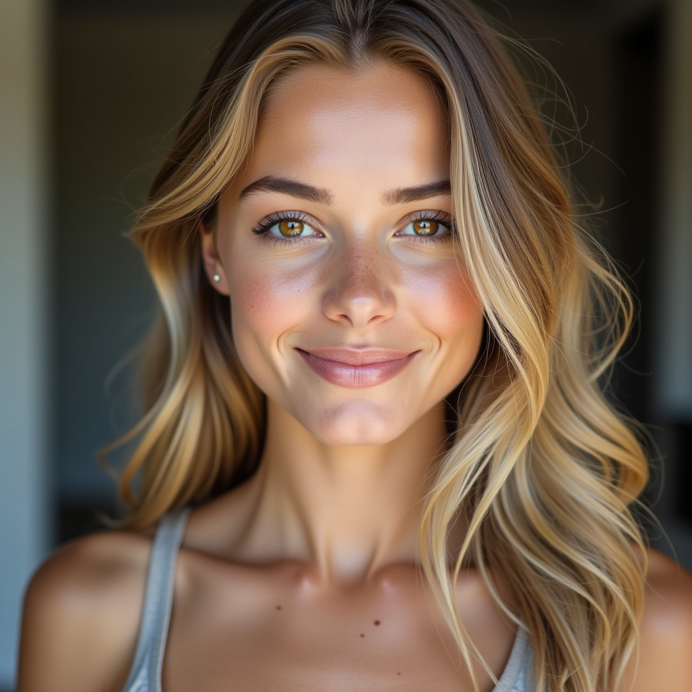
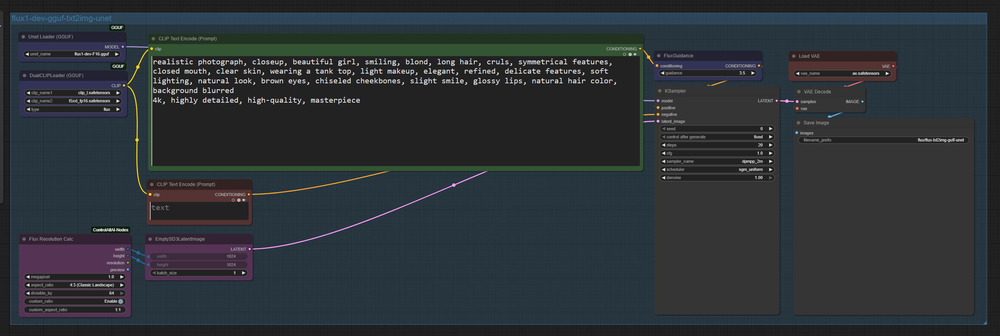
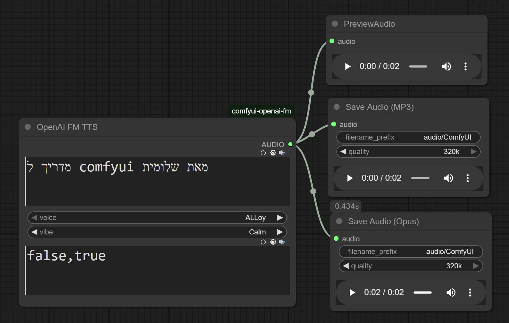
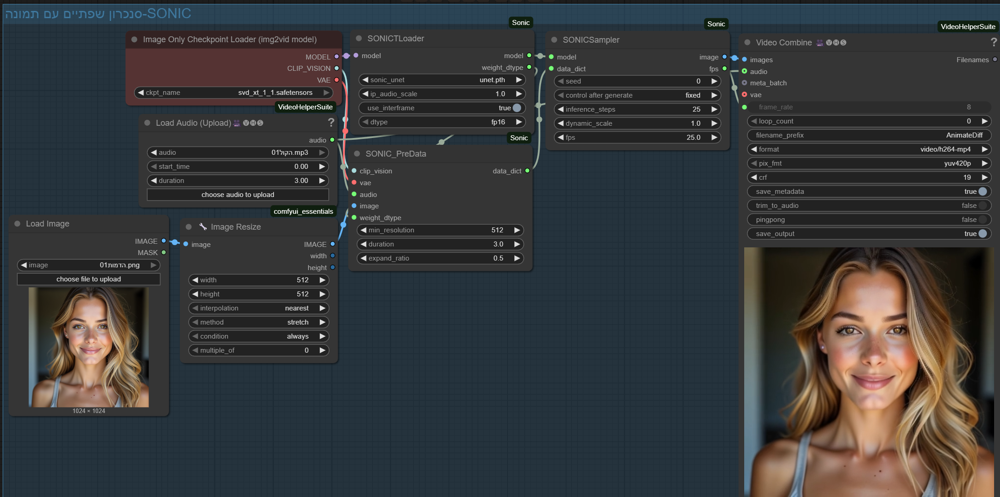

שלום! במדריך זה אציג לכם צעד אחר צעד כיצד יצרתי את הסרטונים שלי באמצעות ComfyUI, מהדמות ועד שילוב הקול והתנועה.
כאן תוכלו לצפות בסרטון הסופי שיצרתי:
להלן פירוט שלבי העבודה המרכזיים שיצרתי ב-ComfyUI.
השלב הראשון היה לייצר את דמות הבסיס, אותה השתמשתי לאחר מכן בסרטון. התמקדתי ביצירת תמונה איכותית, ריאליסטית ויפה.
כך נראה ה-Workflow המלא ליצירת דמות הבסיס:
ה-Workflow כולל טעינת מודל (UnetLoaderGGUF ו-DualCLIPLoaderGGUF), הגדרת פרומפטים חיוביים ושליליים (CLIPTextEncode), הגדרות מידות ותוצאה (FluxResolutionNode, EmptySD3LatentImage, KSampler, VAEDecode, SaveImage). הפרומפט החיובי ששימש אותי ליצירת הדמות היה:
"realistic photograph, closeup, beautiful girl, smiling, blond, long hair, cruls, symmetrical features, closed mouth, clear skin, wearing a tank top, light makeup, elegant, refined, delicate features, soft lighting, natural look, brown eyes, chiseled cheekbones, slight smile, glossy lips, natural hair color, background blurred 4k, highly detailed, high-quality, masterpiece"
בשלב זה, הוספתי יכולת לדמות "לדבר" באמצעות יצירת קול מבוסס טקסט (Text-to-Speech).
כך נראה ה-Workflow ששימש אותי ליצירת הקול והשמעתו:
השתמשתי ב-Node "OpenAIFMNode" על מנת להמיר טקסט לקול. הקול שנוצר הוא: "מדריך ל comfyui מאת שלומית".
ניתן לראות את החיבורים ל-Nodes של תצוגה מקדימה ושמירת קובץ הקול בפורמטים MP3 ו-Opus (PreviewAudio, SaveAudioMP3, SaveAudioOpus).
כאן ניתן להשמיע את קובץ הקול שיצרתי:
השלב האחרון היה לחבר את כל המרכיבים יחד – הדמות, הקול והתנועה – ליצירת הסרטון הסופי.
ה-Workflow הבא מציג את השילוב הסופי של כל הרכיבים:
ב-Workflow זה ניתן לראות כיצד טענתי את הדמות הראשונית באמצעות "LoadImage" (שם הקובץ `הדמות01.png`), שילבתי את קובץ האודיו שיצרתי באמצעות "VHS_LoadAudioUpload" (שם הקובץ `הקול01.mp3`), והשתמשתי במודלים מתקדמים כמו "SONICTLoader" ו-"SONICSampler" כדי להוסיף תנועה ולשלוט בסנכרון בין הקול לתמונה. בנוסף, השתמשתי ב-"ImageResize+" כדי להתאים את גודל התמונה. בסוף התהליך, השתמשתי ב-Node "VHS_VideoCombine" כדי לחבר הכל לסרטון אחד מוגמר.
חשוב לוודא שה-Nodes השונים מקושרים נכון כדי שהסרטון יופק עם התנועה והסאונד הרצויים.
כאן תוכלו להוריד את קבצי ה-Workflow (JSON) שהשתמשתי בהם במדריך זה, על מנת שתוכלו לנסות בעצמכם: